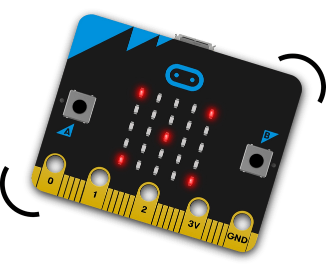

üìã Documentaci√≥n T√©cnica
Fecha límite de entrega: 14 de noviembre de 2025
Esta sección contiene la documentación técnica completa del proyecto MathLabInt, desarrollado en la asignatura "Laboratorio STEAM+" de la Tecnicatura en Redes y Software del Instituto Tecnológico de Informática (UTU).
üìù Descripci√≥n del proyecto
Herramienta educativa que usa sensores de Micro:bit para capturar información del entorno (temperatura, inclinación, orientación, sonido, luz) y transformarla en ejercicios matemáticos.
Genera automáticamente ejercicios personalizados mediante la integración de Inteligencia Artificial, basados en los datos recopilados y adaptados a diferentes niveles de dificultad.
Destinatarios: Profesores y estudiantes de Matemáticas, Física y Química, principalmente.
üîß Materiales necesarios
Placa profesor y placa estudiante para captura y comunicación de datos
Para uso portátil sin conexión USB

Para programación, sistema y generación de ejercicios

Facilita conexiones con sensores externos
Opcional
Sensor adicional de rotación para ejercicios avanzados
Opcional
Para prototipos y conexiones personalizadas
Opcional
⚙️ Diseño mecánico
El sistema utiliza los botones integrados del Micro:bit para la interacción básica:
- Paso 1: Se utiliza el botón A del micro:bit para capturar el dato del sensor activo en ese momento
- Paso 2: Se toma el dato, como se ve en los siguientes ejemplos:

Una vez capturado el dato, el trabajo principal es realizado por el software, generando el ejercicio matemático mediante IA.
⚡ Diseño electrónico (opcional)
Conexión del Rotary Encoder (opcional)
Diagrama de conexión realizado en TinkerCad:

Esquema de conexiones:
| Cable | Origen (Micro:bit) | Destino (Rotary Encoder) |
|---|---|---|
| Violeta | Pin 1 | Señal A del encoder |
| Verde | Pin 0 | Señal B del encoder |
| Rojo | 3V | Alimentación (+) |
| Negro | GND | Tierra (-) |
Nota: La resistencia pull-up está incluida internamente en el módulo del encoder.
üîó Ver dise√±o completo en TinkerCadüíª Dise√±o de software
El proyecto integra múltiples componentes de software para su funcionamiento completo:
üîÑ Flujo del sistema:
- El profesor configura tipo de sensor, dificultad y contexto del ejercicio
- El sistema envía configuración a Micro:bit alumno vía radiofrecuencia
- Micro:bit alumno captura datos del sensor (ej: temperatura, luz, sonido)
- Los datos se envían de vuelta a Micro:bit profesor por RF
- Micro:bit profesor transmite datos al sistema por USB
- El sistema genera ejercicio matemático usando IA con los datos reales
üì¶ Repositorios del proyecto:
Landing page y documentación
Ver en GitHub Conexión Micro:bitComunicación serial
Ver en GitHub Cliente web profesorInterfaz de configuración
Ver en GitHub Servidor Micro:bitBackend y API de IA
Ver en GitHubüõ†Ô∏è C√≥digos utilizados:
- Función: Realiza el llamado a la API de LLM.
- Función: Vinculación de la placa micro:bit docente con el sistema.
- Función: Configuración micro:bit docente.
- Función: Ejemplo de micro:bit estudiante.
import { showToast } from "./ui.js";
const API_URL = "/generate";
export async function fetchExercises(payload) {
try {
const response = await fetch(API_URL, {
method: "POST",
headers: { "Content-Type": "application/json" },
body: JSON.stringify(payload),
});
if (!response.ok) {
showToast("Error llamando a la API", "danger");
throw new Error(`Error en API: ${response.statusText}`);
}
return await response.json();
} catch (err) {
showToast("Error llamando a la API", "danger");
console.error("Error llamando a la API:", err);
return null;
}
}
export async function connectMicrobit() {
if (writer) {
showToast("Micro:bit ya está conectado", "info");
return;
}
try {
showSpinner("Conectando con micro:bit...");
port = await navigator.serial.requestPort();
await port.open({ baudRate: 115200 });
writer = port.writable.getWriter();
reader = port.readable.getReader();
readLoop();
hideSpinner();
showToast("Micro:bit conectado", "success");
} catch (err) {
hideSpinner();
showToast("Error al conectar: " + err, "danger");
}
}
from microbit import *
import radio
# Encender radio y configurar grupo
radio.on()
radio.config(group=1,power=7)
# Inicializar UART
uart.init(baudrate=115200)
while True:
# --- UART → RADIO --- UART (Universal Asynchronous Receiver/Transmitter)
if uart.any():
serial_data = uart.readline()
if serial_data:
message = serial_data.decode('utf-8').strip()
# Enviar al alumno por radio
radio.send(message)
# Feedback visual
display.show(Image.CHESSBOARD)
sleep(300)
display.clear()
# --- RADIO → UART ---
msg = radio.receive()
if msg:
# Mostrar feedback visual
display.show(Image.YES)
sleep(300)
display.clear()
# Reenviar al navegador
uart.write(msg + "\n")
sleep(100)
from microbit import display, Image
from sensor_strategy import SensorStrategy
class SensorLuz(SensorStrategy):
def read(self):
# truco: contar LEDs encendidos como proxy de luz
# (micro:bit no tiene sensor de luz directo, se simula con la pantalla)
level = display.read_light_level()
pendiente = 13.4181
intercepto = -668.1764
resultado = (level * pendiente) + intercepto
if resultado < 0:
resultado = 0
return resultado